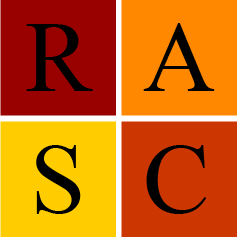

RASC Robots

Robotics and Autonomous Systems Center
Home
About
Research
Robots
People
Events
News
Education
Outreach
RASC News
This is the new News page! Check back later for more updates.
Maja Mataric named Distinguished Professor
Viterbi's Robotics and Coding Academy
Robotic Leg Learns to Walk (Brain-Body Dynamics Lab)
Haptic Armband to Mimic Human Touch (HaRVI Lab)
Bio-Inspired Robot Course
Robot Patrols City Pipes